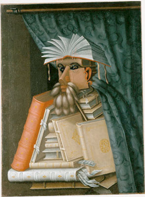

Art, Image, and Rights Research
Need the perfect image for your book? Give Kris a list of what you'd like and she'll find it for you. She has contacts at all the major art houses, including Corbis, Getty Images, Art Resource, and others. Everything from ancient manuscripts to illustrated medieval books to up-to-the minute AP photos; she'll find the images, negotiate the prices with the art houses depending on the usage wanted, and deliver high-resolution photos to the client or have the art house send files and/or links.
Kris did art research for many books at HarperCollins, including Jonathan Kirsch's A History of the End of the World, Richard McBrien's Lives of the Saints and Alister McGrath's Christianity's Dangerous Idea.
